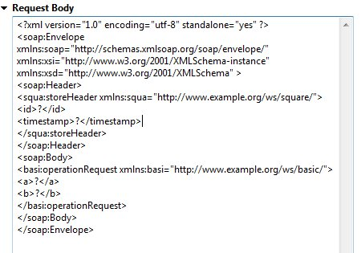

< Main Index Deltacloud Development Tools >
Views |
|
| Web Service Tester Updates |
In M1 we've seriously improved support for testing WSDLs with embedded schemas and namespacing. Whereas before we were pretty namespace-unaware, as we assemble the new SOAP request, we now keep track of the various levels and changes in namespaces used by the embedded schemas.Related Jira In addition, the tester now understands messages that define both a SOAP header and a body. If we encounter a header component to the request message, we assemble that the same way we do as the body and separate them out accordingly.Related Jira  |
|
|
|